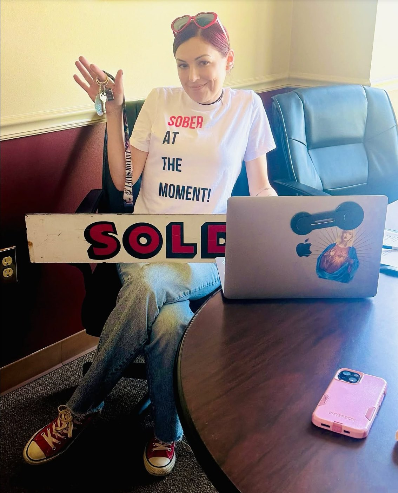

No. 1
Biodance Caviar PDRN Jelly Serum Mist
A jelly serum that sprays out as a fine mist. Spray from about eight inches away for a quick glow or up close to use it as a serum. It works over makeup too.
Buy here →
I love the dopamine hit from buying myself a little treat as much as the next person. But I love returning things even more. I buy it, live with it, decide it's not worth it and send it back. The yearning's gone and I can stop obsessing over it. So when I keep something or buy it again, it deserves its flowers.
These are the things I didn't return over 10 years in recovery. They became part of my personal rotation, the gifts I send and the things I recommend.
XO, Jewels
No. 1
A jelly serum that sprays out as a fine mist. Spray from about eight inches away for a quick glow or up close to use it as a serum. It works over makeup too.
Buy here →No. 2
The pink sister of the purple one. Same jelly-to-mist spray, made for pores and firmness. Keep it in your bag for a midday refresh.
Buy here →No. 3
Gold gel patches you put under your eyes for a quick hydration boost. A little self-care moment. They make a great stocking stuffer.
Buy here →No. 4
A lightweight caffeine eye serum from The Ordinary for puffiness and dark circles. A few drops in the morning and your eyes look awake.
Buy here →No. 5
A nightly retinoid eye balm from Versed for crow's feet, under eye bags and dark circles.
Buy here →No. 6
The snail mucin essence from COSRX for hydrated, glassy skin. This set has two full bottles plus a mini retinol cream to try.
Buy here →No. 7
A daily exfoliating toner from The Ordinary that smooths texture and evens out skin tone. One of the best-value bottles in my cabinet.
Buy here →No. 8
Five hydrogel face masks from LOOPS, one for every mood: brightening, detox, sleep, glow and plumping. They stay put, so you can actually move around while you wear one.
Buy here →No. 9
Three mini lip masks from LOOPS: one hydrates, one glows and one gently exfoliates. A great stocking stuffer.
Buy here →No. 10
A sugar lip scrub in a stick from Tree Hut with shea butter. Swipe it on and rub your lips together for soft, smooth lips. Great for stockings.
Buy here →No. 11
A supersized strawberry lip balm from Lip Smacker. It's hydrating with a clear glossy finish in a nostalgic flavor. I've bought it twice.
Buy here →No. 12
Overnight hydrogel masks with collagen, peptides and hyaluronic acid. You go to bed with one on and wake up with plump, glassy skin. Four masks in a box.
Buy here →No. 13
A minty green clay mask that deep cleans oily, breakout-prone skin. A classic for a reason, and I've been buying it since 2020.
Buy here →No. 14
A five piece K-beauty set from Peach & Lily with a cleanser, mist, serum and moisturizers. It comes in a gift box, so it is ready to give.
Buy here →No. 15
A heated electric gua sha from ZDEER with red light and vibration, for massaging your face and neck. Mine is the pink one, and it also comes in red.
Buy here →No. 16
A handheld high frequency wand from Pure Daily Care with four neon glass attachments, for skin and scalp.
Buy here →No. 17
Soft, disposable face towels from Clean Skin Club for drying your face after you wash it. Fifty extra large towels in a box.
Buy here →No. 18
Two boxes of color-changing gel masks from medicube: a pink PDRN collagen mask and a yellow kojic acid mask.
Buy here →No. 19
A hyaluronic acid serum from WNP in sealed single-use capsules, so each one is fresh and easy to pack for travel. Thirty in a box.
Buy here →No. 20
A Korean skin care toner with niacinamide from Then I Met You. Pat it on after you wash your face for brighter, more hydrated skin.
Buy here →No. 21
A rice powder face wash from TONYMOLY that foams up with water and gently exfoliates. I have bought it eight times.
Buy here →No. 22
A gentle exfoliating face wash from CeraVe with salicylic acid, ceramides, hyaluronic acid and niacinamide. It is fragrance free and comes in a 16 oz value size.
Buy here →No. 23
Hydrocolloid pimple patches with tea tree oil from PatchRx, in three sizes. I've been buying the 120 pack since 2020.
Buy here →No. 24
The classic CeraVe moisturizer with ceramides and hyaluronic acid for face and body. I get the 19 oz tub.
Buy here →No. 25
A four-step mini set from COSRX: snail mucin cleanser, essence, eye cream and all in one cream. Great for travel or as a gift.
Buy here →No. 26
Moisturizing pads with collagen, snail mucin and centella. Swipe one over your face after you wash it, or leave it on for a few minutes like a mini mask. A hundred pads in one jar.
Buy here →No. 27
A tinted moisturizer with SPF 46 from DRMTLGY that evens out my skin and protects it in one step. I use the Dewy shade and I've bought it five times.
Buy here →No. 28
An ultra-slim brow pencil from Anastasia Beverly Hills with a spoolie on the other end. It draws tiny hair-like strokes, so brows look full but natural. I have bought it six times.
Buy here →No. 29
Four stainless steel tweezers with different tips for brows, stray hairs, splinters and ingrowns. They come in a little black case, so they all stay together.
Buy here →No. 30
A precise stainless steel slant tweezer from Cliganic for brows and stray hairs. Mine is the blue.
Buy here →No. 31
A 3 lb bag of Epsom salt from Dr Teal's with magnesium, essential oils and vanilla. Pour some in a warm bath and soak. It also comes in Hawaiian Bliss and Spring Rain.
Buy here →No. 32
A vanilla body wash from Tree Hut with shea butter and natural oils that foams up in the shower. Pair it with the Dr Teal's vanilla soak.
Buy here →No. 33
An in-shower body moisturizer from HANNI. You rub it on wet skin at the end of your shower and skip lotion after. Mine is the Sparkling Palmarosa scent.
Buy here →No. 34
A vanilla strawberry after shave oil from Truly with peptides and hyaluronic acid. It soothes skin after shaving and helps with ingrown hairs.
Buy here →No. 35
A lavender, jasmine and rosewood candle from NEOM that melts into a warm massage oil. Light it, let it pool, then pour it onto your skin for a de-stress ritual.
Buy here →No. 36
The shower partner to the SA Cream. A body wash from CeraVe with salicylic acid and three ceramides that cleanses and exfoliates rough, bumpy skin. I've bought it 16 times.
Buy here →No. 37
A fragrance-free body cream from CeraVe for rough, bumpy skin. Salicylic and lactic acids smooth while three ceramides keep skin moisturized.
Buy here →No. 38
A fragrance-free body scrub from Naturium with pumice, jojoba esters and AHA/BHA/PHA exfoliants. Use it as a scrub, or leave it on as a mask in the shower.
Buy here →No. 39
Fresh Strawberry
The First Aid Beauty body scrub with 10% AHA and pumice for rough, bumpy skin, in a fresh strawberry scent.
Buy here →No. 40
Three 2 oz tubes of the First Aid Beauty KP Bump Eraser scrub in Toasted Coconut, Original unscented and Fresh Strawberry. Travel size, so they fit in any bag.
Buy here →No. 41
Coco Colada
A pump shave oil from Tree Hut that protects and hydrates while you shave. This one smells like pineapple and coconut.
Buy here →No. 42
A post-shave and post-wax liquid from Tend Skin with salicylic acid for razor bumps, ingrown hairs and redness. Swipe a thin coat on clean, dry skin after you shave.
Buy here →No. 43
An anti-stain whitening toothpaste from Wisdom in extra fresh mint. I use it because my sweet tea stains my teeth.
Buy here →No. 44
The classic Dove invisible solid antiperspirant in Original Clean. All day sweat and odor protection. I get the two-pack and I've bought it five times.
Buy here →No. 45
Everything to take gel polish off at home: soak-off remover, peel-off latex tape to protect your skin, cuticle oil, a buffer file and two cuticle tools.
Buy here →No. 46
A few drops bring thick, gloopy nail polish back to life so you don't have to toss it. It comes with a dropper.
Buy here →No. 47
A hair dryer and round brush in one. You get a salon-style blowout at home in one step. The 60mm size is made for shorter hair.
Buy here →No. 48
A slim pink flat iron that heats up in under a minute. It straightens and it curls. Female founded and American owned.
Buy here →No. 49
The Redken All Soft line for dry, brittle hair: shampoo, conditioner and the Heavy Cream mask for when your hair needs extra softness and shine.
Buy here →No. 50
The Redken All Soft line for dry, brittle hair: shampoo, conditioner and the Heavy Cream mask for when your hair needs extra softness and shine.
Buy here →No. 51
The Redken All Soft line for dry, brittle hair: shampoo, conditioner and the Heavy Cream mask for when your hair needs extra softness and shine.
Buy here →No. 52
R48 Red Velvet
A permanent at-home hair color from L'Oréal Paris with a shimmery finish and a conditioner in the box. Red Velvet is an intense deep auburn, and I've bought it three times.
Buy here →No. 53
R57 Cherry Crush
The same shimmery L'Oréal Paris Féria color in a brighter red. Cherry Crush is an intense medium auburn, and this one comes as a two-pack.
Buy here →No. 54
A color depositing hair mask from OVERTONE that keeps red hair bright between dye jobs and conditions it at the same time. I've bought it twice.
Buy here →No. 55
Three OLAPLEX favorites in one set: No. 3 Plus repair treatment, No. 6 Bond Smoother and No. 7 Bonding Oil for shine and heat protection.
Buy here →No. 56
Everything for a sleek, slicked-back look: a wax stick, a finishing stick for flyaways, styling combs and a brush, plus two elastic bands.
Buy here →No. 57
Sixty 2-inch double snap clips in soft neutrals and black. They hold more hair than the classic snap clips, and they come in a clear box so you can always find one.
Buy here →No. 58
A pack of five gold duckbill clips covered in little pearls and shaped like bows. Cute in your own hair and easy to share.
Buy here →No. 59
A volumizing dry shampoo that soaks up oil and freshens your hair between washes, with no white cast. Made for sensitive scalps.
Buy here →No. 60
Twenty glittery clips that hold your hair back without leaving a dent or a crease. Great for doing makeup or pinning curls. Mine are the translucent ones.
Buy here →No. 61
A trifold mirror that lets you see the back and sides of your head, for cutting, coloring or styling your own hair. It has anti-fog glass, so it works in the shower too.
Buy here →No. 62
Cold-pressed castor oil from Handcraft Blends for hair, skin, nails, lashes and brows. It comes in a glass bottle with a dropper, lash wands and little brushes.
Buy here →No. 63
An intensive smoothing mask from Redken for frizzy, unmanageable hair, made with babassu oil and a pH balanced formula.
Buy here →No. 64
A satin pillowcase with an elastic band that slips on like a fitted sheet, so it stays put and travels easy. Gentler on your hair and skin. Mine is the pink, and it comes in a bunch of colors.
Buy here →No. 65
A tarot deck and guidebook with every card inspired by Taylor Swift's eras and songs. An unofficial fan-made deck and a fun way to slow down and check in with yourself.
Buy here →No. 66
A deck of 64 emotional support animal cards by Kate Allan, each with a colorful animal and a kind affirmation. Pull one when you need a little encouragement.
Buy here →No. 67
Ninety-nine CBT, DBT, ACT and positive psychology activities by Judith Belmont, made for running group sessions. A go-to for anyone who leads peer support or recovery groups.
Buy here →No. 68
A 125-card deck by Kiki Fehling, PhD, with DBT skills for mindfulness, distress tolerance, emotion regulation and relationships. Small enough to throw in your bag.
Buy here →No. 69
Seventy-five simple exercises by Melissa Romano, LGSW, to calm your nervous system and ease stress and anxiety. Pull a card whenever you need to reset.
Buy here →No. 70
Fifty-two quick tools by Daniel J. Fox, PhD, for balancing big emotions, managing impulses and living well with borderline personality disorder.
Buy here →No. 71
Handouts, worksheets, safety plans and coping strategies edited by Wilma Schroeder, ready to copy and share with the people you support.
Buy here →No. 72
A colorful workbook by Kim Rosenthal, MD, that explores the first of the Twelve Steps with drawing, coloring, puzzles, stories and the occasional joke. Great for sponsors, peers and anyone starting over.
Buy here →No. 73
More illustrated, fun and professional handouts from Kim Rosenthal, MD, made for drug counselors and their clients. Great for groups.
Buy here →No. 74
Dr. Bessel van der Kolk on how trauma lives in the body and brain, and the many paths to healing. A must for anyone in recovery or helping others heal.
Buy here →No. 75
Dr. Bruce Perry and Oprah Winfrey on trauma, resilience and healing. It changes the question from "what's wrong with you?" to "what happened to you?"
Buy here →No. 76
Dr. Gabor Maté and his son Daniel Maté on trauma, illness and healing, and how the culture we live in shapes all three.
Buy here →No. 77
Laura McKowen, founder of The Luckiest Club, on nine truths to get you through sobriety and everything else. A must for anyone in recovery.
Buy here →No. 78
Ryan Paul Carruthers, PhD, on overcoming addiction without the script. Swift Steps® is in it. He lists us as a recovery resource.
Buy here →No. 79
Noah Levine adapts the Four Noble Truths and Eightfold Path into a Buddhist approach to recovering from addiction, with meditations and practices along the way.
Buy here →No. 80
Former ABC 20/20 anchor Elizabeth Vargas tells the truth about her alcohol addiction and anxiety in this honest, emotional memoir.
Buy here →No. 81
Daily affirmations from Demi Lovato, one for every day of the year, about self-worth, health and her own recovery.
Buy here →No. 82
Greg Downs, a former financial advisor in recovery, uses the Twelve Steps to help you reset your money habits and rebuild your finances. That's me with Greg and his book.
Buy here →No. 83
The recovery classic by Charles L. Whitfield, MD, on healing from a painful childhood and finding your true self again.
Buy here →No. 84
A gentle workbook by Charles L. Whitfield, MD, that goes with Healing the Child Within. Exercises you can work through at your own pace.
Buy here →No. 85
Alice Miller's classic on how childhood shapes us, why so many of us learned to hide our real feelings, and how to find our true selves again.
Buy here →No. 86
Clinical psychologist Lindsay C. Gibson on how growing up with distant or self-involved parents shapes you, and how to heal from it.
Buy here →No. 87
Pia Mellody's classic guide to where codependence comes from, how it shows up in our lives and how to heal from it.
Buy here →No. 88
The hands-on workbook that goes with Facing Codependence. Pia Mellody and Andrea Wells Miller walk you through a step-by-step journaling method for recovery.
Buy here →No. 89
Pia Mellody on breaking the cycle of toxic relationships and learning to love in a secure, healthy way, with twelve-step work, exercises and journaling.
Buy here →No. 90
Pia Mellody and Lawrence S. Freundlich on why relationships falter and the ground rules for truth, respect and lasting love.
Buy here →No. 91
A daily meditation book by Melody Beattie for anyone working through codependency. One short reading a day about self-care, growth and letting go.
Buy here →No. 92
Psychotherapist Jessica Baum on anxious attachment and how to feel more secure in yourself and in your relationships.
Buy here →No. 93
Matt Haig on how he came through his darkest time and learned to live again. Honest, hopeful and even funny in places.
Buy here →No. 94
The follow-up to Reasons to Stay Alive. Matt Haig looks at how modern life feeds our anxiety and how to live a calmer, better life anyway.
Buy here →No. 95
Short, hopeful notes from Matt Haig for anyone who needs a little encouragement. Easy to open to any page.
Buy here →No. 96
Psychiatrist Dr. Ellen Vora makes the case for intuition, mystery and a little magic in everyday life. It is our Swift Steps Book Club pick, and she is coming to Speak Now.
Buy here →No. 97
A 52 week self-care workbook from therapist Megan Logan, MSW, LCSW, with weekly lessons, exercises and journaling prompts for loving yourself through every season.
Buy here →No. 98
Megan Logan, MSW, LCSW, guides you through exercises, quizzes and journaling prompts to quiet self-doubt and build self-compassion. Pairs well with Be Kind to Yourself.
Buy here →No. 99
A collection of writing and speeches by Justice Ruth Bader Ginsburg, with Mary Hartnett and Wendy W. Williams, on gender equality, the Supreme Court, opera and more.
Buy here →No. 100
John Koenig invents words for feelings we all have but never had a name for. A beautiful book to flip open anywhere.
Buy here →No. 101
A funny illustrated book by Glenn Boozan about animal moms who are way worse than you. The perfect gift for any mom who needs a laugh.
Buy here →No. 102
Four comedy writers flip classic joke setups into sharp, funny takes on everyday sexism. A great gift for the friend who is tired of being the punchline.
Buy here →No. 103
From-scratch pizza recipes from Joe Beddia of Pizzeria Beddia, the Philly spot Bon Appétit named the best pizza in America. Dough, sauce and cheese, done right.
Buy here →No. 104
An unofficial Taylor Swift inspired cookbook by Lindsey Smith with 50+ recipes for every era, from breakfast to Midnights, plus playlists and Easter eggs.
Buy here →No. 105
An unofficial coloring and activity book by Jessica Kendall with 30+ coloring pages, word searches, mazes and fun facts. The pages are perforated, so you can tear out the ones you finish.
Buy here →No. 106
A coloring book for Swifties by Jami Allen with 45 relaxing designs and Taylor inspired quotes and patterns.
Buy here →No. 107
A grown-up coloring book of dream catchers, mandalas, sheep, flowers and clouds for winding down at night. It is hard to find new now, so check the used copies.
Buy here →No. 108
A full rainbow deck in a black keepsake box from Fredericks & Mae. Too pretty to only bring out for game night.
Buy here →I buy these for my friends' littles, and every year since I got sober I donate them to the Livengrin children's gift drive on my birthday. None of them are random. I pick each one thinking about what I could have used at that age, back when I was the kid in their shoes, opening gifts from the church school drive.
No. 109
A sweet storybook by Lane Rebelo that teaches 40 baby signs like milk, eat and I love you. A sweet gift for new parents.
Buy here →No. 110
A punny dinosaur board book by Rose Rossner, illustrated by Junissa Bianda, for babies and toddlers. Sweet to read together and an easy gift for little ones.
Buy here →No. 111
A punny animal board book by Rose Rossner, illustrated by Sydney Hanson. A sweet read-aloud for babies and toddlers and an easy stocking stuffer.
Buy here →No. 112
A Little Golden Book biography by Deborah Hopkinson about Betty White, the TV star, comedian and lifelong animal lover. Sweet for kids and the grown-ups who grew up with The Golden Girls.
Buy here →No. 113
A Little Golden Book by Shana Corey about Justice Ruth Bader Ginsburg and her fight for equal rights. A great first biography for future trailblazers.
Buy here →No. 114
From Brad Meltzer's Ordinary People Change the World series, a fun illustrated biography of Jane Goodall and her love of animals. Great for little dreamers.
Buy here →No. 115
A rhyming picture book by Elizabeth Estrada that teaches kids about body safety, consent and their circle of trust in a gentle, kid friendly way.
Buy here →No. 116
A read-aloud board book by Megan Madison and Jessica Ralli that gives toddlers simple words for asking, saying yes and saying no about their bodies.
Buy here →No. 117
A picture book by Elizabeth Cole that helps kids learn about personal space, body safety and consent through a simple, friendly story.
Buy here →No. 118
An illustrated book by Jayneen Sanders with everyday scenarios that help kids talk about body ownership, feelings, respectful choices and bullying.
Buy here →No. 119
Fun, hands-on mindfulness activities for kids ages 5 to 9 by Lorraine M. Hobbs and Amy C. Balentine, PhD, to help them be kind to themselves and build emotional strength.
Buy here →No. 120
Thirty simple mindful breathing exercises for kids by Kira Willey, illustrated by Anni Betts. Kids can do them anywhere to feel calm and focused.
Buy here →No. 121
A soft white tee with faded red vintage art. Easy to wear and easy to gift.
Buy here →No. 122
Layered "lost" lettering with a baby blue "cliché" patch. A little vintage. It pairs with the one before it.
Buy here →No. 123
An organic cotton tee in kids' sizes. Every one you buy supports the Jane Goodall Institute, its science work and its youth program, Roots & Shoots.
Buy here →No. 124
A cropped ribbed knit bolero with long sleeves and an open front. Easy to throw on over a tank or tee when you want to be cozy.
Buy here →No. 125
A soft cropped ribbed knit in white with black bows all over. Cute with high-waisted jeans.
Buy here →No. 126
A cropped black mock neck in a soft ribbed knit. Easy to dress up or down.
Buy here →No. 127
A bright pink fuzzy sweater covered in soft white hearts, with dropped shoulders. It comes in a few colors.
Buy here →No. 128
A sheer black mesh top with a velvety leopard print, a mock neck and long sleeves. Mine is the black leopard, and I wore it to a show at Xfinity Mobile Arena.
Buy here →No. 129
An oversized black and white checkered knit with a mock turtleneck and big balloon sleeves. Cozy and loud at the same time.
Buy here →No. 130
A fitted ribbed tank in black and white stripes. Easy with jeans and a belt.
Buy here →No. 131
Three soft, stretchy off the shoulder crop tees in white, grey and black from SOLY HUX. It is sold out on Amazon right now, so check back.
Buy here →No. 132
White
A soft, stretchy ribbed tank with a little notch at the V neck. I have it in white and black, and it comes in lots of colors.
Buy here →No. 133
Black
A soft, stretchy ribbed tank with a little notch at the V neck. I have it in white and black, and it comes in lots of colors.
Buy here →No. 134
V Neck
A fitted ribbed top with ruffle cap sleeves from VICHYIE. I have the V neck in black and the crewneck in hot pink, and it comes in lots of colors.
Buy here →No. 135
Crewneck
A fitted ribbed top with ruffle cap sleeves from VICHYIE. I have the V neck in black and the crewneck in hot pink, and it comes in lots of colors.
Buy here →No. 136
A slim fitted ribbed crewneck tee from VICHYIE. Mine is the red short sleeve, and it also comes in long sleeve and lots of colors.
Buy here →No. 137
A fitted ribbed tee with a mock neck, cap sleeves and ruched sides. Mine is the hot pink.
Buy here →No. 138
A fitted ribbed mock neck top with cap sleeves from DCCISU. Mine is white, and it also comes in brown. Easy to dress up for work or wear with jeans.
Buy here →No. 139
Fitted long sleeve mock turtlenecks for layering under scrubs, sweaters or anything else. This pack comes in black, white and light grey, plus lots of other color sets.
Buy here →No. 140
Grey
A slim fitted, stretchy ribbed crewneck tee from ANRABESS. I have it in grey and in black and white stripes, and it comes in a ton of colors.
Buy here →No. 141
Striped
A slim fitted, stretchy ribbed crewneck tee from ANRABESS. I have it in grey and in black and white stripes, and it comes in a ton of colors.
Buy here →No. 142
Two fitted, stretchy ribbed tees with a crew neck and ruching at the waist. I got the black and white set, and there are lots of color combos.
Buy here →No. 143
Black
A fitted ribbed crop tee with a little lettuce ruffle at the neck, sleeves and hem. I have it in black and white, and it also comes in olive.
Buy here →No. 144
White
A fitted ribbed crop tee with a little lettuce ruffle at the neck, sleeves and hem. I have it in black and white, and it also comes in olive.
Buy here →No. 145
A slim fit black top with a white-trimmed V neck and little ruffle sleeves. Dressy enough for work, easy with jeans. It is sold out on Amazon right now, so check back.
Buy here →No. 146
Three fitted mock neck tops with cap sleeves and ruching on the sides. Mine came in black, grey and light blue. They work for the office or going out, and the set comes in lots of color combos.
Buy here →No. 147
A soft cotton-poly tee from Crazy Dog T-Shirts with the line from The Sandlot in baseball script. Mine is the heather red, and it also comes in blue, black, navy and grey.
Buy here →No. 148
Soft, fitted crew neck tees from True Classic in a cotton-poly blend. I got the white 6-pack, and they come in lots of color mixes.
Buy here →No. 149
A soft acid wash crop top with ripped details, a chest pocket and a loose fit. Grungy in the best way. It comes in a bunch of colors.
Buy here →No. 150
A fitted black moto jacket with gold zippers, quilted sides and a stand-up collar. You'll spot me in it all over this guide.
Buy here →No. 151
Shirts from Savage Sisters, the Philly harm reduction and recovery housing nonprofit. My Narcan Saves Lives tee is sold out, but their shop has lots of other designs.
Buy here →No. 152
From the Swift Steps® shop. I wore mine the day I bought my house.
Buy here →No. 153
Handmade by Jen's Invisible Strings for the Swift Steps® shop. Each recovery year gets its own era colors, letter beads and a charm. Jen also does custom months, years, colors and charms.
Buy here →No. 154
A soft dark grey tee that says Pro Roe 1973. It also comes with a Pro-Choice definition on the front.
Buy here →No. 155
High-waisted, baggy wide leg jeans covered in rhinestones, in a soft stretch denim. Mine are the light blue wash, and they also come in black, dark blue, grey and tan.
Buy here →No. 156
High waisted, baggy wide leg jeans in a soft stretch denim. Mine are the light blue, and they come in lots of washes plus black, white and tan.
Buy here →No. 157
Light wash denim overalls with tie bows down both legs and adjustable straps. They come in blue, white and black.
Buy here →No. 158
A corduroy overall jumpsuit from CIDER with adjustable straps and wide legs. Mine is the rust orange, and it also comes in green, black and brown.
Buy here →No. 159
Wide leg denim overalls from CIDER with a subtle stripe texture, pockets and adjustable straps. They come in three washes.
Buy here →No. 160
A sleeveless V neck denim jumpsuit from CIDER with buttons down the front, pockets and wide stretchy legs. It comes in five colors.
Buy here →No. 161
Wide leg houndstooth suspender overalls with pockets from Milumia. Mine are the black and white, and they come in a few colors.
Buy here →No. 162
Cotton linen short overalls with deep pockets and rolled hems. Throw a tee under them and you are dressed. They come in a bunch of colors.
Buy here →No. 163
Black and white checkerboard bib overalls with adjustable straps. Loud in the best way. Wear them with a plain tee and let them do the talking.
Buy here →No. 164
A short ribbed tank dress with a V neck and ruching down the sides. I've bought it four times in different colors, most recently steel blue. It comes in a ton of colors.
Buy here →No. 165
A vintage-style mini dress with a floral lace top, half sleeves and a full A-line skirt. Mine is the black. Dressy enough for a wedding or a party, and it comes in white too.
Buy here →No. 166
A short-sleeve off the shoulder skater dress with a high-low hem that swishes when you walk. Mine is the black, and I've had it since 2021. It comes in lots of colors.
Buy here →No. 167
A black sleeveless 1950s style dress with a thin belt and a big swingy skirt. I bought it in 2016 and still have it. Amazon has it listed as unavailable right now, so check back.
Buy here →No. 168
A high waisted, fully lined mini skirt in black and white houndstooth with a side zipper. It comes in a bunch of plaids too.
Buy here →No. 169
A high waisted pleated plaid skirt with shorts built in. Mine is the yellow plaid, and it comes in a bunch of colors.
Buy here →No. 170
A ribbed, ruched mini dress with a twist at the front and a little cutout. Mine is the black, and it comes in a bunch of colors.
Buy here →No. 171
White
A soft cropped zip-up with a drawstring hood. I have it in white, black and grey.
Buy here →No. 172
Black
A soft cropped zip-up with a drawstring hood. I have it in white, black and grey.
Buy here →No. 173
Grey
A soft cropped zip-up with a drawstring hood. I have it in white, black and grey.
Buy here →No. 174
A lightweight slim fit zip up with a white zipper, white drawstrings and a kangaroo pocket. Mine is the steel blue, and it comes in a bunch of colors.
Buy here →No. 175
The same easy zip up in black, with the white zipper and drawstrings. It comes in a bunch of colors too.
Buy here →No. 176
A cozy cropped crewneck with balloon sleeves and a drawstring hem you can cinch. Mine is black, and it also comes in grey, red and white.
Buy here →No. 177
A black cropped hoodie with a drawstring and black and white checkered sleeves. Amazon has it listed as unavailable right now, so check back.
Buy here →No. 178
Pink
A soft hoodie covered in little black dogs from The Black Dog on Martha's Vineyard. Cozy, a little preppy and made for dog people. It comes in pink and grey.
Buy here →No. 179
Grey
A soft hoodie covered in little black dogs from The Black Dog on Martha's Vineyard. Cozy, a little preppy and made for dog people. It comes in pink and grey.
Buy here →No. 180
High waisted, wide leg sweatpants with a drawstring and pockets. Mine are the heather grey, and they come in lots of colors.
Buy here →No. 181
Buttery soft, high waisted flare leggings with no front seam from UNISSU. Mine are black, and they come in three inseam lengths.
Buy here →No. 182
A smooth black bra with a pretty scalloped neckline. Comfy basics make a better gift than you would think.
Buy here →No. 183
Five sparkly stones that climb up your ear, big to small. They go on like a regular stud and look dressed up without trying. I've bought these 10 times over because I keep losing them.
Buy here →No. 184
A washed cotton dad hat with a crowned Ruth Bader Ginsburg on the front and a buckle in the back. Amazon has it listed as unavailable right now, so check back.
Buy here →No. 185
Crew socks with a crowned Ruth Bader Ginsburg from Balanced Co. One size, and they come in light blue, pink or grey.
Buy here →No. 186
A pendant made after Ruth Bader Ginsburg's dissent collar, from Dissent Pins. Mine is the silvertone, and it comes in gold too.
Buy here →No. 187
Prison Mike crew socks from Balanced Co., the same people who make my RBG socks. For anyone who quotes The Office.
Buy here →No. 188
A soft, cozy black and white houndstooth scarf with fringe on the ends. It comes in a ton of plaids too.
Buy here →No. 189
A gold pizza slice charm covered in rhinestones, with a lobster clasp that hooks onto a necklace, bag or keychain. It comes in a little velvet bag, so it's ready to give.
Buy here →No. 190
Black
A small nylon belt bag with a zip front and an adjustable strap. Wear it around your waist or across your body. Shown here in black and in white.
Buy here →No. 191
White
A small nylon belt bag with a zip front and an adjustable strap. Wear it around your waist or across your body. Shown here in black and in white.
Buy here →No. 192
A glossy black cat-eye frame with dark lenses. Classic and a little dramatic. They go with everything.
Buy here →No. 193
A bold white cat-eye frame with gold arms and dark lenses. They look like summer, even in December.
Buy here →No. 194
Thin black metal frames with heart-shaped lenses. Fun for a show, a coffee run or a day out with friends.
Buy here →No. 195
Black knee-high boots with a stiletto heel, a little platform and a stretchy shaft with a side zipper. I've had mine since 2023. They also come in brown.
Buy here →No. 196
Black chunky platform ankle boots with a front zipper and three buckle straps. Mine are the black.
Buy here →No. 197
Wireless earbuds from Apple with active noise cancellation, live translation, heart rate sensing and a hearing aid feature.
Buy here →No. 198
Little disco balls on a string for your tree, your mantel or your craft corner. They run on batteries, so no outlet needed. Comes in a 10 or 20 ball string.
Buy here →No. 199
Two shiny red balloon dogs holding up your books. Fun and bold. A great gift for the reader in your life.
Buy here →No. 200
A weathered green metal street sign with holes in the corners for hanging. Made for a garage, game room or man cave.
Buy here →No. 201
A cordless mushroom lamp with a rippled shade. When it glows, the light looks like moving water. Set it next to the tub for a calm night in.
Buy here →No. 202
A pre-seasoned cast iron Dutch oven from Lodge for soups, stews, chili and bread. It goes on the stove and in the oven, and it'll outlive all of us.
Buy here →No. 203
A shiatsu neck and shoulder massager with kneading nodes and heat. Drape it over your shoulders and let it work out the knots from the day.
Buy here →No. 204
A heart-shaped ceramic dish with a gold rim, covered in little Eras icons: the cardigan, the snake, the disco ball, the 13 and more. Made for your rings and friendship bracelets.
Buy here →No. 205
A 12-inch silver jewelry stand with a ceramic tray at the bottom. Necklaces and bracelets hang on the bar and rings go in the dish, so nothing gets tangled.
Buy here →No. 206
An extra large 30 by 12 inch desk mat in pink checkers. Big enough for a keyboard and a mouse, and it comes in lots of other prints too.
Buy here →No. 207
Warm white fairy lights sized for a shower curtain, with hooks and a waterproof battery box. Eight lighting modes for a cozy bath.
Buy here →No. 208
A soft light pink comforter with quilted hearts all over, plus two matching pillow shams, from Paris Hilton's home line. Full/queen size.
Buy here →No. 209
Light pink sheets covered in hot pink bows, from Paris Hilton's home line. You get a fitted sheet, a flat sheet and two pillowcases. Deep pockets fit mattresses up to 15 inches. Mine are the queen.
Buy here →No. 210
Light pink bedding covered in a singer in all her different looks, with pink guitars, mics, cassettes, record players, rings and heart sunglasses. It has a deep pocket fitted sheet.
Buy here →No. 211
A stain remover for carpet, clothes and upholstery that handles coffee, wine, makeup and pet stains, new or old. Comes as a 2-pack.
Buy here →No. 212
A spray-and-wash stain remover that even gets stains out after they have been through the dryer. No dyes or scent.
Buy here →No. 213
A plush red mug toy for your pup with The Black Dog logo on the front, made to look like their classic diner mug. It is sold out right now, so check back.
Buy here →No. 214
A double row undercoat rake for dogs and cats with thick or long coats. It works out mats and pulls loose fur during shedding season.
Buy here →No. 215
Extra sticky lint rollers made for pet hair on clothes, couches and dog beds. Two rollers and 200 sheets in a pack.
Buy here →No. 216
A no pull harness that clips at the chest and the back, so walks stop being a tug of war. I've had mine since 2020. Mine is the teal.
Buy here →No. 217
The double clip leash made to go with the Freedom harness. One end clips to the chest, the other to the back. Mine is the teal to match.
Buy here →No. 218
Calming piano music made for dogs, from Sounds True. Good for storms, fireworks and the hours you're not home.
Buy here →No. 219
From 27 Club Coffee. One side has the Emo Nite logo. The other has a little life advice.
Buy here →No. 220
A big white mug covered in rainbow sprinkles with a pop of color inside. It looks like a birthday cake and makes every coffee feel like a little celebration.
Buy here →No. 221
For the book lover with a filthy sense of humor. The joke is printed on both sides, and it is dishwasher and microwave safe. Comes in 11 oz or 15 oz.
Buy here →No. 222
Houndstooth
A 40 oz insulated tumbler from Simple Modern with a handle and straw that fits in a cupholder. I have two: the purple breeze houndstooth and the cotton candy tie dye. It comes in lots of colors.
Buy here →No. 223
Tie Dye
A 40 oz insulated tumbler from Simple Modern with a handle and straw that fits in a cupholder. I have two: the purple breeze houndstooth and the cotton candy tie dye. It comes in lots of colors.
Buy here →No. 224
From 27 Club Coffee. A Colombian coffee with notes of stone fruit, citrus and chocolate. Ten compostable pods with no plastic, made for your Keurig.
Buy here →No. 225
mgk's official roast from 27 Club Coffee. A light roast from a family farm in Veracruz, Mexico, with notes of honey nut, vanilla wafer and sugar cane. Ten compostable pods for your Keurig.
Buy here →No. 226
A non-alcoholic beer with a light, crisp taste, under 0.5% ABV. It says it right on the box: full taste, full memory. The koozie in my photo is the Sober at the Moment koozie from the Swift Steps® shop.
Buy here →No. 227
Pre-sweetened, zero-calorie black tea from Southern Breeze in family-size bags that brew in hot water. It stains my teeth, so I keep the Wisdom Smokers Toothpaste on hand.
Buy here →Some, but not all, of these are affiliate links. When you buy through one, I may earn a small commission, and your price stays the same. Every bit of it goes to the Swiftie Scholarship Fund, so someone who needs a seat in the room can have one and never gets turned away because of money.